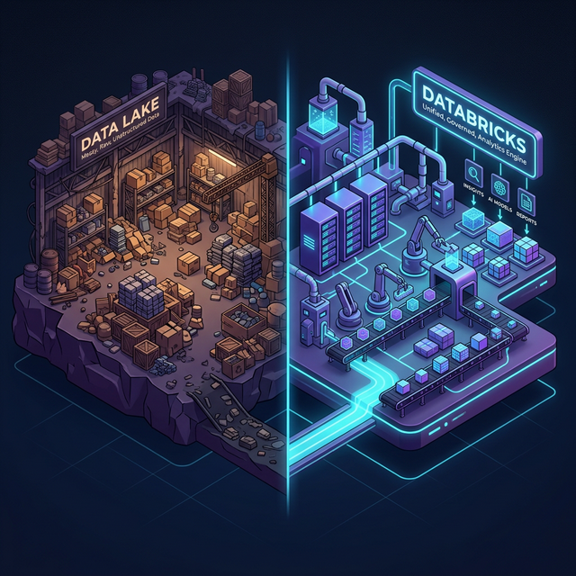
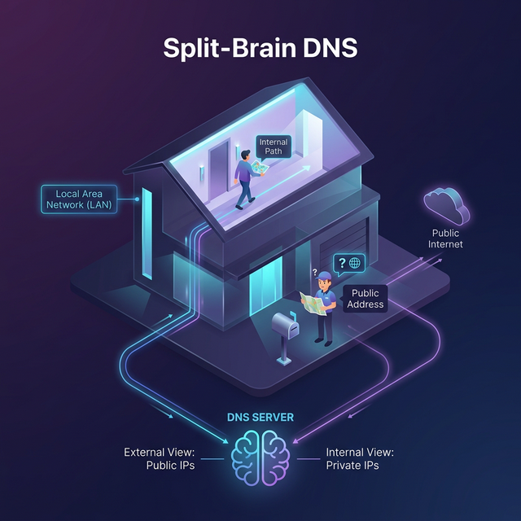

The regulator didn't care about our multi-million dollar Databricks demo. They pointed at the open public endpoint. Here is how we locked down the Data Lake without breaking the bank or taking the network down.
The Level-Set: What Are We Actually Defending?
If you're new to Microsoft or just starting in Cloud Architecture, let's step back before we talk about firewalls and DNS. Why does a bank or a hospital even buy Azure Databricks and an Azure Data Lake? What actually are they?
The Simple Analogy: The Warehouse and The Factory
Imagine a massive, empty warehouse where delivery trucks just dump raw materials (wood, metal, plastic) on the floor 24/7. They don't sort it; they just drop it. This is your Azure Data Lake (specifically, ADLS Gen2). It is an infinitely massive, incredibly cheap hard drive in the cloud. We don't organize the data exactly like a spreadsheet yet; we just dump raw application logs, millions of daily transaction receipts, and customer audio recordings into the lake.
The problem? A warehouse full of unsorted materials is useless on its own. It's just a swamp.
This is where Azure Databricks comes in. Databricks is the highly advanced, robotic factory built right next to the warehouse.
Databricks spins up massive compute clusters (hundreds of virtual machines) essentially acting as factory machines. These machines go into the Data Lake (the warehouse), chew through petabytes of that raw swamp water, assemble the pieces (clean the data), look for patterns (like credit card fraud), and turn it into finished, polished products (actionable Business Intelligence reports).
The Real-World Use Case: Let's say a retail bank needs to process 50 million credit card swipes from the last 24 hours to flag fraudulent anomalies before the market opens. A standard SQL database would choke entirely under that weight. Databricks instead spins up 50 servers, processes the data in parallel directly from the Data Lake in 15 minutes, and then spins those servers back down so you stop paying for them.

The Exfiltration Threat (And Why VNet Injection Isn't Enough)
Deploying Azure Databricks isn't just about spinning up Spark clusters. For enterprise architects in regulated industries, deploying Databricks means solving a fundamental data residency and exfiltration paradox.
You lock down your ADLS Gen2 storage accounts. You hide them behind a firewall. But if your Databricks clusters (which process this newly protected data) lack a secure perimeter back to the control plane, or fetch secrets from public Key Vault endpoints, your data is still subject to exfiltration by a compromised identity. If you're relying strictly on Service Endpoints or dynamic IP firewalling, you're playing a losing game of whack-a-mole.
The fix? A full-stack Azure Private Endpoint architecture. But here’s the harsh reality: if you do it wrong, you will break DNS, introduce split-brain routing, and artificially inflate your Azure Firewall costs by tens of thousands of dollars per month. Let's look at the survival guide.
1. The Real Story on Azure Private Endpoints
A Private Endpoint (PE) is literally just a virtual network interface (vNIC) injected into your subnet. It
grabs a private IP from your address pool. From that point on, reaching
mydatalake.blob.core.windows.net resolves to `10.1.x.x` instead of traversing the public
Microsoft edge.
Why it matters:
- Public Exposure Drop: Instantly nullifies public internet scanning and direct internet access threats.
- Compliance Boundaries: Satisfies strict data residency controls. Traffic never leaves the Azure backbone.
- Exfiltration Mitigation: An attacker with compromised credentials inside your VNet cannot export data to their generic Azure Storage account. PEs enforce a specific resource path.
2. The 3 Private Link Flows in Databricks
Many teams slap a Private Endpoint on ADLS and call it a day, but a genuinely secure Databricks environment requires three separate Private Link flows to completely eliminate public exposure.
The "Secure Office Building" Analogy
-
Front-End Private Link: The connection from your users (via ExpressRoute/VPN) to
the Databricks Workspace UI.
Analogy: The VIP Employee Entrance. Instead of staff walking through the public front doors (the open internet), they badge in through a private, secure underground tunnel directly from corporate HQ (your VPN).
-
Back-End Private Link: The Secure Cluster Connectivity (SCC) relay. This is how the
injected VNet clusters securely talk back to the Databricks Control Plane without a public
IP assigned to the nodes.
Analogy: The Secure Walkie-Talkies. The workers inside the building (your compute clusters) need to receive instructions from Headquarters (the Control Plane). Instead of shouting out the window, they use a private, encrypted radio channel that no one outside can intercept.
-
PaaS Private Endpoints: How the data plane (compute) privately reads/writes to ADLS
Gen2, pulls images from ACR, and fetches secrets from Azure Key Vault.
Analogy: The Internal Service Elevator. When workers need raw materials (Data) or building keys (Key Vaults), they don't walk out to the public loading dock facing the street. They use a private internal elevator to pull exactly what they need safely within the building.
3. The 30% Cost Trap (A Realist's Warning)
Here is where textbook architecture completely falls apart in production. Standard Hub-and-Spoke patterns dictate that all inter-spoke and internet-bound traffic routes through an Azure Firewall (NVA) in the Hub.
Do not do this with Big Data Private Endpoints.
Databricks generates massive, bursty throughput. I have seen clients force cluster-to-storage traffic through their highly-available firewall appliances "for visibility." Data processing through Azure Firewall Premium costs roughly $0.016/GB. If a Spark job shuffles 100 TBs of data an hour, you are adding thousands of dollars to your monthly Azure burn rate for literally zero security benefit (since the traffic is entirely internal PE traffic anyway).
The Fix: Use User Defined Routes (UDRs) to explicitly bypass the NVA for Storage Private IPs. Let the compute talk to the PE locally within the VNet.
4. Taming the DNS Monster
The #1 failure mode during a Private Endpoint cutover is Split-Brain DNS.
The Simple Analogy: Two Maps to the Same Party
Imagine you are throwing a house party.
• You give your external friends (the public internet) the map address: "123 Main Street".
• You give your family members (who are already inside the house) a different map address: "Go down
the hallway to the Living Room".
"Split-Brain DNS" happens when your maps get mixed up. If a family member trying to reach the Living Room asks for directions, and you accidentally hand them the public map ("123 Main Street"), they will walk out the front door, get in their car, drive around the block, and try to re-enter through the front gate (which is locked by the bouncer/firewall). The connection drops.

In Azure, your on-premise servers and VNet servers must realize the Data Lake is "inside the house" (the
Private IP: 10.1.2.5). If your internal servers accidentally use public DNS, they will resolve
the public IP of the Data Lake, route traffic out to the internet, and drop packets because the PaaS public
firewall is set to Deny.
If your application teams are allowed to deploy their own Azure Private DNS zones inside disparate spoke VNets, you are literally giving out conflicting maps. You will experience catastrophic name resolution failures when on-prem clients or interdependent applications try to resolve the endpoints.

The Rule: Centralize your Azure Private DNS Zones in your Hub. Use the new Azure
DNS Private Resolver. On-premise DNS servers must conditionally forward
core.windows.net, azure.net, and azuredatabricks.net queries directly
to your centralized Resolver INBOUND endpoint.
5. The "Cutover Night" Migration Checklist
Migrating from public to private is not an overnight "flip the switch" exercise. It's a progressive lockdown.
- Discovery: Parse Storage Analytics logs. Map every external system reading the public endpoint. You cannot shut off the public firewall without knowing who you are breaking.
- Parallel Path Phase: Build the Private Endpoints and link the DNS. Do not disable Public Network Access yet. Let the VNet-injected components fail over to the private IP naturally while legacy systems continue to use the public route.
- Pilot Cutover: Update on-prem forwarders. Ask a QA user to access the workspace.
- Lockdown: Toggle the PaaS firewall to "Deny all public network access." Use Azure Policy (`DeployIfNotExists`) to ensure nobody turns it back on.
Ready to operationalize your Azure journey?
We don't do textbook theories. We build robust, regulated, multi-region cloud architectures designed for zero-trust environments.